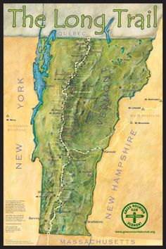

Hiking the Long Trail
In 2016 my wife and I decided to hike the Long Trail in Vermont, which starts at the Massachusetts border, follows the crest of the Green Mountains for 273 miles, and ends at the Canadian border. Previous to this we had never even been on an overnight hike, so it was key to research the required gear, physical training, food preparation, as well as how to safely take our dog Atticus.
How we trained our bodies...
What we learned about gearing up...
What we learned about nutrition...
How we got our food...
How we prepared to take our dog...